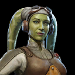
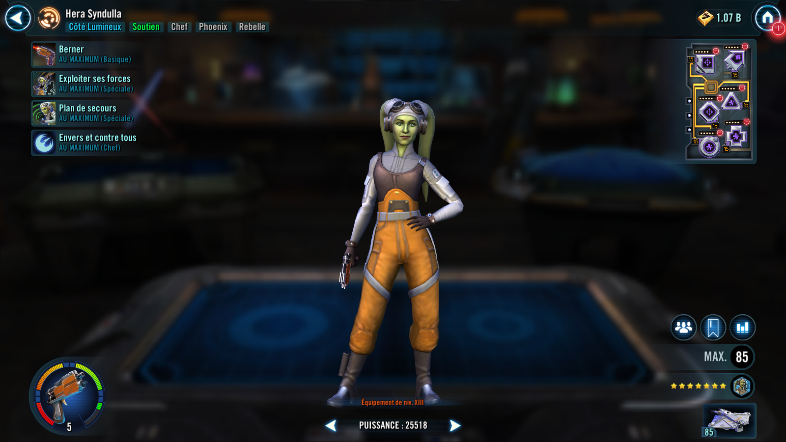
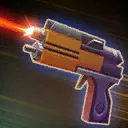
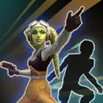
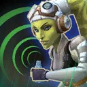

Hera Syndulla
Cunning Phoenix Support that allows Phoenix allies to share their Unique abilities with each other


Cunning Phoenix Support that allows Phoenix allies to share their Unique abilities with each other


Deal Physical damage to target enemy. If that enemy was the healthiest enemy, also Expose them for 1 turn.

Call another target ally to assist. That ally's attack has +50% Potency and deals 35% more damage. If target ally is Phoenix, dispel all debuffs on them, reduce their cooldowns by 1, and grant them 50% Turn Meter.

Target other ally gains Backup Plan for 3 turns.
Backup Plan: Recover 10% Health per turn, revive with 80% Health and 30% Turn Meter when defeated; can't be dispelled or prevented
Each active Phoenix ally grants their Unique ability to other Phoenix allies. In addition, whenever a Phoenix ally uses a Special ability, they gain 20% Turn Meter if Hera is active. This effect is doubled for Phoenix allies with less than full Health.
Omicron Boost : While in Territory Wars: Phoenix allies have +30% counter chance, +50% Max Health, and +30 Speed. When Hera uses Backup Plan, all Phoenix allies gain Backup Plan for 3 turns. The first time each other Phoenix ally falls below 50% Health, Hera gains 80% Turn Meter. Whenever a Phoenix ally uses a Special ability, all Phoenix allies gain 10% Offense (stacking) until they're defeated.